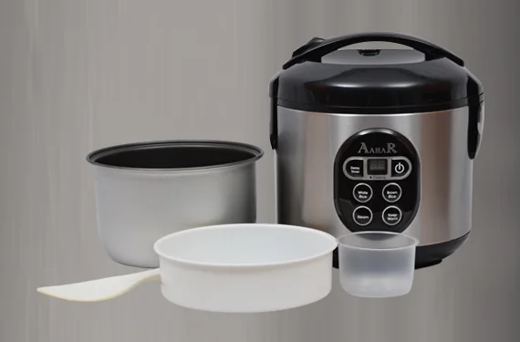
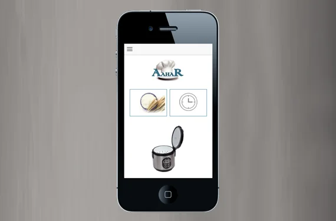
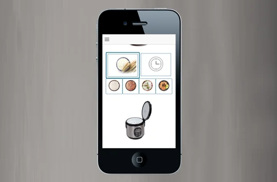
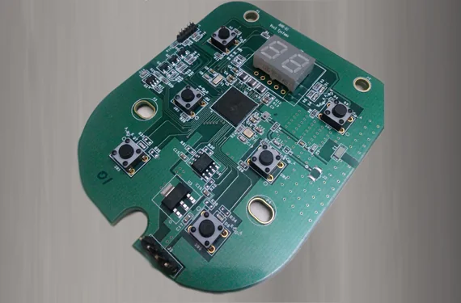
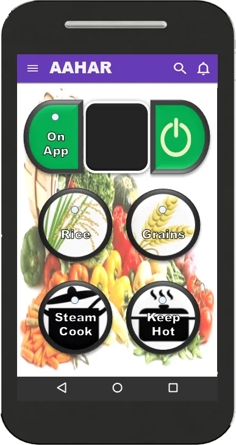
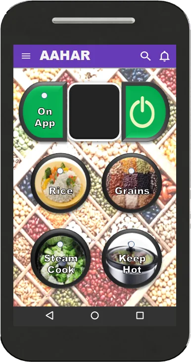
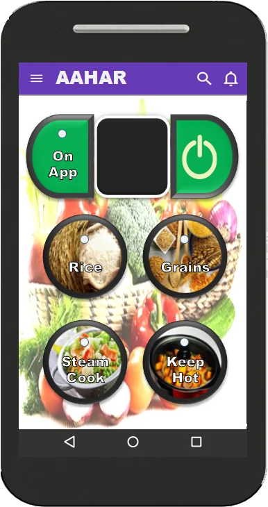
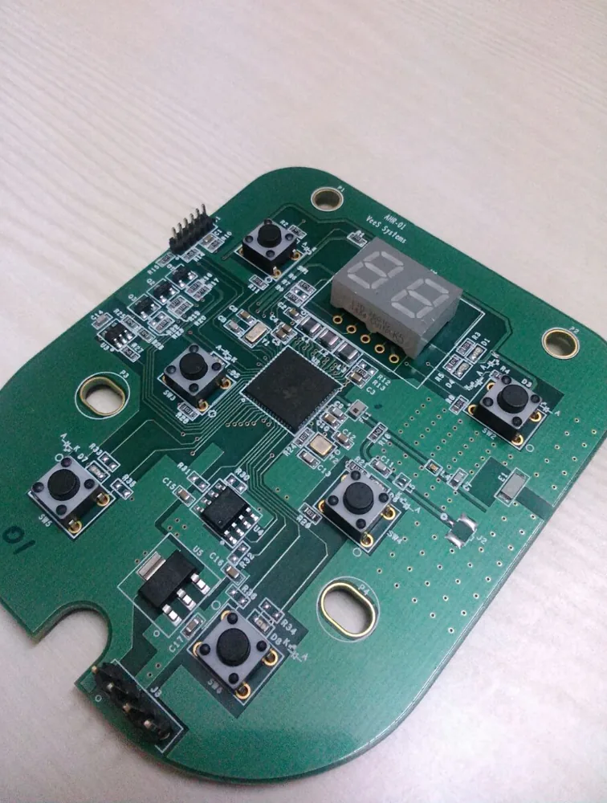

Multi-Mode Cooker
Added intelligence cooks all rice varieties, steams, warms food and makes soup.
AaharCook to the best
Choose a mode, set the timer and start cooking from your phone, whether you're in the kitchen or across town. Aahar watches the pot and keeps your food warm until you're ready to eat.
Connected cooking, engineered end-to-end by Switchers
Aahar turns the kitchen cooker into a connected device. Added intelligence handles every rice variety, steam cooking, soups and warming, and the Aahar App gives you full control and live status from anywhere.
Added intelligence cooks all rice varieties, steams, warms food and makes soup.
Intuitive app screens give you complete control over cooking and let you monitor it remotely.
Program a cooking profile for the ingredients, taste and flavour you want, with temperature and time.
Add the rice, set the cook on the panel, then pick it up on your phone. The same 30-minute cook shows on the cooker display and in the Aahar App.
Each feature combines the hardware, firmware and app layers, so the cooker behaves the same whether you press a button or tap your phone.




The same six controls are on the cooker and in the app. Press a key on the panel to see what it does.
Aahar
Turns Aahar on and off. Press it on the cooker or tap it in the app. To cancel a selection at any time, press Power and choose the cooking mode again.
The Aahar App connects through your home Wi-Fi and gives you wireless control of the cooker. Find the dish, adjust the settings and tap ON. You get restaurant-quality rice at the touch of a button.



Add rice and water in the morning. Start cooking from your desk, the gym or the bus, and come home to food that's ready to eat.
Each step works on the cooker and in the app, and the display counts down so you always know where the cook is.
Add rice or other ingredients, lock the inner pot into place and connect Aahar to your Wi-Fi.
Press Power on the cooker, or tap it in the Aahar App.
Use Timer to set the cooking time. Each press adds one minute, up to 99 minutes.
Choose White Rice, Brown Rice or Steam. The digital display counts down from the time you set.
The app tells you when it's done, and Aahar switches to Keep Warm automatically.
We recommend not leaving rice on Keep Warm for more than 10 hours. To switch Aahar off, press Power twice.

Aahar shows how Switchers works: one team designed the electronics, firmware, wireless link and app together, so the product works as one smooth experience.
Custom board with heating control, digital display and tactile cooking keys.
Mode logic, heat profiles, delay timer and the automatic switch to Keep Warm.
Two-way link over home Wi-Fi for remote commands and live status.
Intuitive control screens, a personal profile library and alerts when food is ready.
We took an everyday kitchen cooker and gave it intelligence, connectivity and an app. We can do the same for your product, from concept and circuit design to firmware, wireless, testing and production support.